Water Reporter
Home
Edit Profile
Submit Source Report
Submit Purity Report
View Reports
Log Out
Worker Home
Welcome to your Worker Home Page. Here you can see submit and view water source reports, submit water purity report, and view water source locations.
Water Source Locations